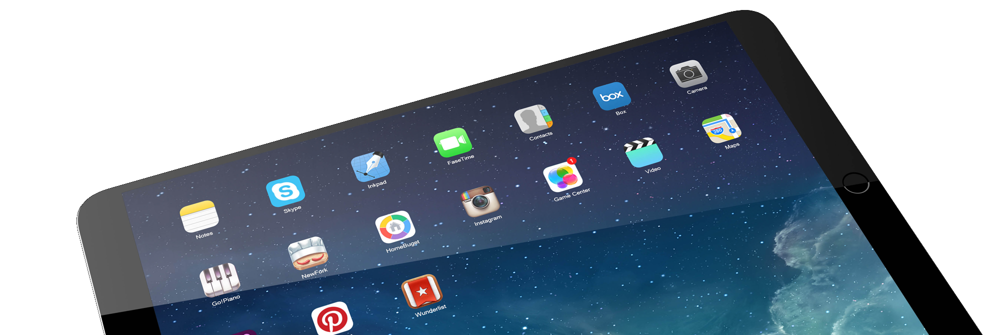

YUDU are an app developer with over ten years of experience operating in three major marketplaces: Publishing, Corporate Solutions and Education.
YUDU Publisher, our content publishing platform, allows clients to easily upload documents and video, create DRM and permission management, add interactive content and more. Alongside this, we maintain an in-house creative team that can help build interactive books from scratch, create bespoke HTML5 assets or simply help with your branding needs.
Regardless of where you are based, we can help you deliver digital content, whether it's publishing a local magazine on a tablet or providing a secure investor relations platform.Our production team are repeatedly praised by clients for their exceptional customer service. If you need to contact our sales teams, you can find YUDU teams in London and New York and supporting partners all over the globe.
Since its inception at the turn of the millennium, Sine Qua Non has built a reputation for innovative and effective communications and sponsorship programmes, along with a growing portfolio of clients.
Initially established to fuse a driving passion for technology and sports sponsorship, we have expanded the breadth of our PR, communications and marketing capability to embrace the digital age and now offer services to meet the needs of a range of sectors.
Developed through both acquisition and organic growth, our team of passionate and dedicated professionals bring experience coupled with fresh thinking to deliver breakthrough programmes and campaigns for clients.
Our senior team members spent many years honing their craft at renowned, global enterprises such as Hewlett Packard, Nortel, Sun Microsystems and Toyota – companies that expected real and measurable progress on business goals and a tangible return on marketing activities. At SQN we combine this foundation of world-class business and process management with innovative thinking and creative flair to build marketing programmes that exceed client goals.
Sine Qua Non has been shortlisted for Hollis Sponsorship Association awards in both international and brand categories, and boasts a multi-lingual staff with fluent English, French, Italian and German skills.
Since its inception at the turn of the millennium, Sine Qua Non has built a reputation for innovative and effective communications and sponsorship programmes, along with a growing portfolio of clients.
Initially established to fuse a driving passion for technology and sports sponsorship, we have expanded the breadth of our PR, communications and marketing capability to embrace the digital age and now offer services to meet the needs of a range of sectors.
Developed through both acquisition and organic growth, our team of passionate and dedicated professionals bring experience coupled with fresh thinking to deliver breakthrough programmes and campaigns for clients.
Our senior team members spent many years honing their craft at renowned, global enterprises such as Hewlett Packard, Nortel, Sun Microsystems and Toyota – companies that expected real and measurable progress on business goals and a tangible return on marketing activities. At SQN we combine this foundation of world-class business and process management with innovative thinking and creative flair to build marketing programmes that exceed client goals.
Sine Qua Non has been shortlisted for Hollis Sponsorship Association awards in both international and brand categories, and boasts a multi-lingual staff with fluent English, French, Italian and German skills.